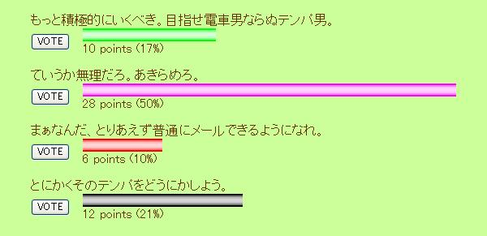
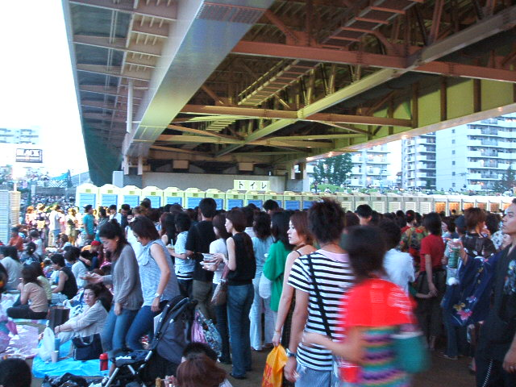

日々、想ふ
〜過去感じたことがつれづれと〜
（できるだけ最大化してお読みください）
日々、想ふ
そうだ、京都に行こう。８/１５
人間っていうのは自分の恋愛に対しては
どこまでも自己中心的な生き物なんですよね、
今日のあいのりを見た感想はそれです、
決して己の話ではありません、タケユキです。
今週前半にツーリング行こうと思ってたんだけど
天気が微妙で遠くまで行く元気がなかったので
京都のさんまの家にやってきました。
午後から京都に行ってボーリングやろうと思ったのに
ラウンドワン人多すぎで断念、スポッチャに変更。
(ラウンドワンにある１５分１００円で遊び放題の施設、
最近行った
JJや
Bbと似たようなもの)
そこで人生初のローラースケート(足の車輪が縦１列のやつ)に挑戦。
めちゃめちゃこけた。
スケートってすっげぇ難しいのね。
フィギュアスケートの選手とかって天才なんだなって実感した。
それから夜は二条駅近くの焼肉食べ放題へ。
２２００円で食べ放題、けっこう安い割には肉がおいしい。
食べ残しがあると一人プラス５００円になるみたいだけど。
そのお店で座った席の隣のテーブルにいた二人の男の客が
店員にからむ典型的な迷惑な客だった。
「おすすめのドリンクはなに？」とか「俺いくつに見える？」とか、
バイトの２０代くらいの女の子にからみまくる。
もうこれ以上調子乗ったら俺がガツンいったろうかって思ってた。
うそだけど。
それでラストオーダーの時間になってその客が
「頼んでいいならもっと飲むで、ソルティードッグも」
調子に乗って最後に２杯頼んでた。
飲み放題終了５分前。
その男「
あかん飲みきれへん」
残して帰っていった。
久しぶりにアホな人間を見た。
今日の京都旅行：傷心旅行です。
今日は。８/１４
世界陸上最終日。
今夜中の３時。
前の日記でも書いたけど
この世界陸上はある競技で１位を取ったら
世界６４億の１位
ってテロップ出るんだけど
リレーの時にアメリカが優勝した時も
世界６４億の１位って言ってた。
リレーって４人一組なんだけど。
もうわけわからん。
今日かけるつっこみ話はこれくらい。
今日の〜のコーナー：おやすみです。
中途半端な空模様。８/１３
無事東○研の内定もらいました、
誰だ昨日お前は柏○研だろとか言ってたやつは、タケユキです。
今日は会うのが久しぶりな友達と遊ぶ約束してたんだけど
そろそろ出かけようかって時間に雷＆雨。
バイクででかけるつもりだったから
結局今度にしようってことで中止に。
中止にしてから少しして雨やんで、
それからは曇ってたけど雨らしい雨は降らず、
結局今日は遊ぶ約束が中止になって
部屋の掃除をしただけの一日。
降るならめっさ降ってくれた方があきらめもつくってのに。
今日の悔い：もうちょっと決断が遅ければ。
表の中にカーソルを合わせてみてください。８/１２
| タイの寺院 |
アンコール遺跡 |
箕面滝 |
明石海峡大橋 |
実家近辺 |
昔撮った写真見てたら旅に出たくなりました。
来週あたりに天気がよかったらでかけてみようと思う、タケユキです。
今日は久しぶりにダイヤモンドシティ行ってみたり
テント張る練習したりしてましたよ。
真っ昼間に大の男が公園でテント張ってる姿はいくぶんか異様でしたが。
バイトも休みになったし、昼寝でもしますか。
とまぁ今日の日記が短いのは
上のカーソル合わせたら画像が表示されるように
するところにかなりの時間を費やしたからだったりします。
今日の画像表示部分：javaスクリプトってやつで記述してあります。
こんなんでました。８/１１
昨日の夜に世界陸上見てました。
女子の８００ｍ決勝で選手がゴールして
１位が決まった時にテレビ画面の下あたりに
６４億人の１位
とかいうテロップが表示されてました。
ってことはこの女の人はこの世の男の人も含めた中で
一番速いんですかねちょっと誇張しすぎていませんか
走る競技とかってのは男の人の方が速い気がするのは気のせいですか
俺が陸上競技に無知なだけかもしれませんけど、タケユキです。
おとといやった
投票の集計はこんな感じになりました。

というわけでここを見てる人からの
結論としては「あきらめろ」ということになりました。
それにしても
頼まれてもいないのに自分の恋愛の悩みを
ネット上にさらされてあげくの果てに
一方的にあきらめろとかって言われる上田が
ちょっと不憫でならない気がするけど、気のせいか。
今日の季節はずれ；こんな猛暑にサクラサク。
バイト、激しんどい。８/１０
この日は日記お休みしました、タケユキです。
夏、恋の季節〜実名報道〜。８/９
バイクのエンジンオイル交換しました、タケユキです。
今日夜上田から電話がかかってきた。
(上田：高校の同級生。俺と誕生日が同じ)
なんかここ最近片思いをしているらしい、と。
深夜二時半に電話かけてきたかと思うとそんな話。
その相手は上田も所属しているギター部の女の子らしくて
普段メールはそんなにしない。最後にメールしたのは
５月。
でもって二人で話をすることはほとんどない。
背景としてはこんな感じ。
しかし今は夏、がんばらねばと、
せめて二人で話くらいできるようにならなければ、と
友達の男１人とその女の子とその友達２人の４人が
しゃべっているとこにまざって話しかけようと思ったんだと。
それで友達の男に話しかけながら輪に入ろうとして
男に話しかけたら女の子３人があっちに行った
らしいんですね。
俺としてはたまたまあっちに行ったか
女の子に嫌われてるかどっちかとだと思うんだけど
俺はそうまでしかアドバイスできませんでした。
どうせなら上田もいろんな人から意見聞きたいだろうから
せっかくだから
ここで意見をつのります。
上田を知ってる人も知らない人も思い思いのアドバイスをしてあげてください。
今日のネタ：深夜にこの電話で起こされたから
無許可でネタにしても許されると思う。
気持ちの糸、切れる。８/８
昼寝３時間くらいしてみた、
そんでマンガ１５冊続けて読んでみた。
気分はもう夏休み、明日もテストあるけど。
これで単位落としたらアホですけど開放感なんですよ、
まあ夜勉強してるけど、タケユキです。
あ、ドラゴン桜おもしろいかもしれん。
今日のうちのお姫様：俺はタクシーですかい？
面接という名の公開処刑。８/７
今吹田から帰ってきました、タケユキです。
今日は昨日の試験に続いて面接があったんだけど、
なめてました。
噂で面接は形だけのおまけみたいなものって聞いてたけど
いざフタをあけてみれば
面接室には教授・助教授がせいぞろい。
１２，３人はいたと思う。
今まで何回か面接受けてきたけど
１対１２の面接は始めてだ(１が俺)。
最初は「志望理由はなんですか？」って聞かれたら
かっこよさそうだから
って答えればいいやって内心気楽に考えてた俺超アホ、バカ。
あんな場所でギャグみたいなことしたって絶対ウケない。
そんなのだと思ってなかってぐだぐだな面接になったような。
さぁどんなもんか。
今日のアスファルト：めっちゃ熱いんですけど。
試験は乗り越えたと思う、自分なりに。８/６
というわけで今日は今期最大の試験を受けてきました。
試験はとりあえず全部答え書いて、
見直す時間もあったんだけど、
まぁいつもの試験と同じで合ってるかどうか分かりません。
まぁやれるだけのことはやったって感じでしたかね。
結果が不安ではあるけど楽しみでもあるってとこですか、タケユキです。
夕方からは天気が気になったんだけど
淀川の花火大会に行ってきました。
さすがに人が多かったけどその分目の保養になったというか、
いや、花火がですよ？
もうほんときれいなのが多くて・・
いや、花火がですよ？
まだテストは残ってるんだけど
なんかあとは流して受けていっていい気がする。
そんな、久しぶりに感じた開放感。
今日の画像：トイレの数と並ぶ人の多いこと多いこと：

明日は。８/５
明日が今期一番の山です、タケユキです。
どうなるか分からんけど、とりあえずがんばりますか。
さぁどんなもんでしょ。８/４
夏休みまであと一週間、タケユキです。
というわけでテストが始まったわけですが
テストっていうのはいわば真剣勝負、
馴れ合いなんてなまぬるいものじゃなくて
殺るか殺られるかの真剣勝負の世界なわけです。
ましてや今日はテスト科目は数学的な科目。
知識と知識のぶつかり合いなんですよ、本来は。
実際には記憶の勝負でしたが。
というわけで今日のテストは出る問題の解答を丸暗記して
書けるところだけ書くという潔い勝負に出ました。
そして、ついに勝負の時、
試験１６：２０開始、試験時間は９０分。
１６：３９退出。
真剣勝負にこの潔さは必要だと思う。
書けるところを書いたらそこから粘ることなく、
すぐに退出するっていう背中の傷は武士の恥みたいな。
席を立った瞬間に隣の方から
もう出ていくのかよっていう小さな笑い声が
聞こえたような気がするがたぶん気のせい。
俺の潔い男の背中を羨望の眼差しで見つめてたに違いない。
また一つ男のレベルが上がった。
取得単位数は一つ減りそうですが。
今日の要点：見切るなら早いほうがいい。
昨日あんな話書いたから。８/３
はい今日も引きこもりですよ、タケユキです。
昨日メールが来ないって話を書いたんだけど
そこまで期待はしてなかったんだけど
今日偶然か必然か、久しぶりにケータイが鳴った。
親父からだった。
親父がこのHPを見てるわけはないので
たまたまなんだろうけどたぶん半年ぶりくらいの
親父からのメール。
しかも内容は「生きてるか？」だった。
えぇ息子は生きていますよ。
立派に生きてるかは知りませんが。
今日のクーラー：フル稼働中。
自分からメールしろって話なんですが。８/２
昨日のテスト「情報ネットワーク」の合否がもう出てるみたいですよ。
なんか不合格の人は学校のパソコンにメールがきてるらしいですよ、
俺は勝手に合格してるものだと思ってます、
でも気になるから明日か明後日にでも見てこよう、タケユキです。
前にも書いたことあるかもしれんのだけれど
このHPにはアクセス解析なるものがついていて
このサイトにどこのページのリンクから飛んできたとか
お気に入りから直接アクセスしてきたとか、
そういった情報が分かったりします。
そんな機能を使ってるおかげで
このHPにリンクしてくれてるHPやらブログやらが分かったりして
それがきっかけで友達がやってるブログを見つけたりしたり、
たまにだけどそんな発見があったりします。
このHPを始めて２年と３ヶ月、
俺の直接の知り合いで誰が見てくれてるのか
ふとちょっと気になった。
去年の年末くらいに地元に帰ったらコンビニで会ったうのきの彼女に
「なにげにあたしHP見てるよ」
とか言われたり。
てかお前らまだ付き合ってるの？
別に見られて困るような内容を書いてるわけじゃないからいいんだけど
自分の日記を誰が読んでるのかってのは意外に気になるもんなんですね。
それで俺のHP見てるって人で一言くらい何か
俺にメッセージの一つや二つくれてやってもいいよって人は
ここ最近ずっと存在価値のないこのページの下にあるメールフォームを使って
なんかメールをくれるといいと思います。
名前は俺に分かるように書いてくれたらどんなのでもいいので。
先月何通か下のメールフォームからメールもらったんだけど
名前から誰かが推測できなくて誰だ？ってちょっと考えた。
見てるよーとかそういう簡単なものから
夏休みちょくちょく暇なんで遊ぼうとか大歓迎で待ってますよ。
なんでいきなりメールを募集したかっていうと
ケータイの方に全然メールが来なさすぎて
ケータイについてる受信ランキング機能(最近メールした人のランキング)を見ると
トップテンに
メルマガが２つもランクインする非常事態。
俺こんなに友達少なかったっけ？と痛感した一日だったわけです。
というわけでここまで長い文章を読んでくれたやさしいあなたは
すぐ下のメールフォームに直行してくれるといいと思います。
今日のメールフォーム：
誰か知ってたら教えてください。８/１
オレンジレンジのドラマーが脱退するって噂は本当ですか、タケユキです。
今日ラジオ聞きながら勉強して知ったこと、
トランプってなんで５２枚か知ってますか？
この５２っていう数字は実は１年にある週の数のこと。
それからなんでトランプの柄が４種類でそれぞれが１３枚かというと、
ひとつの季節が１３週あるから。四つの季節で４種類。
１３枚が４種類で５２週間分、つまり７×５２で３６４日。
これにジョーカーを１枚加えて３６５、１年の日数になるそうです。
聞くとへえートランプにもそういう意味があったんだと思った。
けどそれぞれの柄が四季を表すことは分かったけど
ジョーカーは絵柄ではどこにも当てはまらないわけで
じゃあ現実世界の３６５日のうちの１日は
四季のどれでもない１日っていうことがあることになって・・
えーそれって何月何日のことやねん。
気になって勉強の手も止まる。
気分転換に風呂いってこよう。
今日の一日：テストだけでしたよ。
{kind=link}